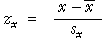
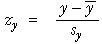

Definition des Korrelationskoeffizienten
Normalerweise wird der Korrelationskoeffizient mit der folgenden Formel definiert
Es ist jedoch einfacher ihn in einer anderen Form zu verstehen. Man verhindert eine Abhängigkeit von der Maßeinheit der Messungen von X und Y, indem man den Korrelationskoeffizienten durch die Z-Werte der zwei Variablen ausdrückt.
| standardisiertes X, |  | standardisiertes Y, |  |
|---|
Im Sinne von,

wobei n die Anzahl von Individuen ist, von denen die Werte X und Y erfasst wurden.
Der Korrelationskoeffizient ist eine Art von Durchschnitt der Produkte der Z-Werte.
(Der Nenner (n-1) wird anstelle von n gebraucht, da er in den Formeln für die Standardabweichung von X und Y benutzt wird.)
In welchem Bezug steht r zu der Form des Streudiagramms?
Die folgenden Eigenschaften von r erklären im Allgemeinen wie sein Wert im Bezug zu der Stärke des Zusammenhangs in jedem beliebigen Streudiagramm steht. Man ist nicht in der Lage den Korrelationskoeffizienten zu interpretieren bevor man nicht dessen Eigenschaften kennt.
|
 |
|
 |
|
 |
|
  |
|
−1 ≤ r ≤ +1 |
Auch wenn es schwer ist einige dieser Eigenschaften zu überprüfen, ist es möglich ein Gefühl dafür zu bekommen, wie die Werte von r die Stärke des Zusammenhangs von seiner Definition wiedergibt. Das folgende Diagramm erläutert dies:
Die Stärke des Zusammenhangs und r
Das untere Diagramm zeigt ein Streudiagramm mit Z-Werten für X und Y, in dem Diagramm durch z(x) und z(y) gekennzeichnet.
Die Schraffierung im Diagramm zeigt die Produkte von z(x) und z(y)- sie ist blau, wenn das Produkt positiv ist und rot, wenn das Produkt negativ ist. Desto stärker die Schattierung, desto weiter ist z(x)*z(y) von Null entfernt.
| Der Korrelationskoeffizient, r, ist eine Art Durchschnitt dieser Produkte, z(x)*z(y). |
Der Schieberegeler zeigt Daten mit verschiedenen Korrelationskoeffizienten. Beobachte, dass:
Das Diagramm ist dreidimensional. Klicke auf die Schaltflähce oben rechts, um es zu rotieren (oder ziehe die Mitte des Diagramms mit der Maus Richtung oben links). Die farbige Oberfläche zeigt das Produkt von z(x)*z(y) für alle z(x) und alle z(y). Passe den Korrelationskoeffizienten mit dem Schieberegeler wieder an.